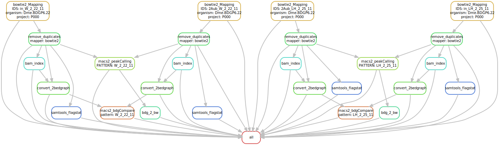

This workflow should able an automated workflow of chip-seq data sets.
An environemnt.yaml file was created to contain the list of packages installed for the environment.
The installation with the above file failed due to conflicts, so I decided to do it manually. I have created the conda env with the command conda create -n ChipSeq.Snakemake. Then, after activating the environment, I installed the tools manually.
(e.g. conda install bwa)
A [config.yaml] file contains all the needed parameters for the analysis. For each analysis, some parameters must be changed for the workflow to run correctly.
conda create --name chipseq
conda activate chipseq
conda config --add channels bioconda # add the bioconda channel to the conda env.
conda install snakemake-minimal samtools bedtools cutadapt fastqc rseqc bwa bowtie2 picard macs2 bioconductor-chipseeker segemehl deeptools meme segemehl -c bioconda -c conda-forge -c r -c bioinfo
conda install -c conda-forge graphviz # to enable the dot tool to create directed graphsconfig.yaml filethe same config file used for the genome indexing and star mapping is also used here.
This file contains a list of possible organisms with links to their fastA and gtf file. These links were used in the the snakefile genomeIndexing to create the indicies for the different mappers.
For now, the mappers we have are star (for RNA-Seq usually) and bwa, segemehl, bowtie2 for chip-seq data sets. General parameters for each of these mappers can be eset in the config file
One parameter set here is which mapper to use for the analysis.
mapper: "bowtie2"Here the value can be one of the three above mentioned mappers bowtie2,bwa, or segemehl.
# For the bedgraph files.
effGenomeSize: 2652783500The effektive genome size parameter is set for deepTools to calculate the values in each bin in bamCoverage.
snakefileFor the workflow a snakefile was created. Here, each steps is described as a rule and they are executed in a directed order of steps, each one depending on one (or few) steps before. The order of execution is also visualized in the attached image.

It begins with the fastq files, converts them to different formats (bdg, bam, bai, peaks, etc.) and run different analyses.
# Snakefile run
the snakefile run starts with mapping the files using the given mapper (in the example here I’ll use bowtie2) (the samples in the examples commands were chosen arbitrary.)
bowtie2 --threads 16 --dovetail --very-sensitive-local --no-unal --no-mixed --no-discordant -X 2000 -x /fs/pool/pool-bcfngs/genomes/Dme.BDGP6.22/bowtie2Index/Dme.BDGP6.22 -1 2Aub_W_2_22_11.conc.R1.fastq.gz -2 2Aub_W_2_22_11.conc.R2.fastq.gz 2> P000/Dme.BDGP6.22/bowtie2/2Aub_W_2_22_11.log | samtools view -Sbhu -q 7 -@8 - | samtools sort -@8 - -o P000/Dme.BDGP6.22/bowtie2/2Aub_W_2_22_11.sorted.bam
picard MarkDuplicates I=P000/Dme.BDGP6.22/bowtie2/in_W_2_22_11.sorted.bam O=P000/Dme.BDGP6.22/bowtie2/in_W_2_22_11.rmdup.bam M=P000/Dme.BDGP6.22/bowtie2/in_W_2_22_11_rmdup_metric.txt REMOVE_DUPLICATES=true
samtools index P000/Dme.BDGP6.22/bowtie2/2Aub_W_2_22_11.rmdup.bamNext the bam files are converted to bedgraph
bamCoverage --bam P000/Dme.BDGP6.22/bowtie2/2Aub_W_2_22_11.rmdup.bam --outFileName P000/Dme.BDGP6.22/bowtie2/bedgraph/2Aub_W_2_22_11.rmdup.bdg --outFileFormat bedgraph --binSize 10 --effectiveGenomeSize 2652783500 --extendReads 160 --normalizeUsing CPM --ignoreForNormalization chrX chrMPeak calling is done using the macs2 tool
macs2 callpeak -t P000/Dme.BDGP6.22/bowtie2/2Aub_W_2_22_11.rmdup.bam -c P000/Dme.BDGP6.22/bowtie2/in_W_2_22_11.rmdup.bam -f BAM -g mm -n W_2_22_11 -B -q 0.05 --outdir P000/Dme.BDGP6.22/bowtie2/macs2/
macs2 callpeak -t P000/Dme.BDGP6.22/bowtie2/2Aub_W_2_22_11.rmdup.bam -c P000/Dme.BDGP6.22/bowtie2/in_W_2_22_11.rmdup.bam -f BAM -g mm -n W_2_22_11 --broad -B -q 0.05 --outdir P000/Dme.BDGP6.22/bowtie2/macs2/And the bedgraph files can also be comapred with macs2 to generate fold-enrichment track.
macs2 bdgcmp -t P000/Dme.BDGP6.22/bowtie2/bedgraph/2Aub_W_2_22_11.rmdup.bdg -c P000/Dme.BDGP6.22/bowtie2/bedgraph/in_W_2_22_11.rmdup.bdg -o W_2_22_11 --outdir P000/Dme.BDGP6.22/bowtie2/macs2/W_2_22_11.compared.bdg -m FEadd detailed-summary when the workflow is done
chipseeker